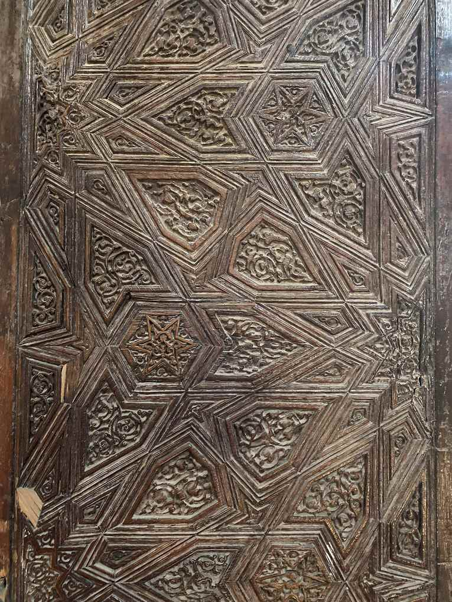

١. خطّاف افتتاحي
اثنتا عشرة وحدة، وأسئلة عمر كامل، تقود كلها إلى جملة واحدة قصيرة. لا مراسم، لا رسوم، لا وسطاء، ولا امتحان قبلها. في هذه الوحدة القصيرة: أسئلتك الأخيرة وأجوبتها، والجملة كلمةً كلمة كما تُنطق، وقصة رجل وقف قبلك عند الباب نفسه واشترط شرطًا واحدًا — فاسمع ما قيل له.
٢. خلاصة تنفيذية
الدخول في الإسلام نطقٌ واعٍ بالشهادتين بفهم ورضا وصدق — به تكون مسلمًا كامل الإسلام بينك وبين الله، ولا تحتاج وسيطًا ولا إذنًا ولا رسومًا. ما قبله من الذنوب يمحوه الإسلام محوًا كاملًا: «الإسلام يجبّ ما قبله»، وحقوق الناس تُردّ بقدر الوسع. وعند النطق تصلك فورًا حزمة «أول ٧ أيام» ورفيق مسمّى، وتبدأ أول درجة على «سلم النور» نحو حياة جديدة متدرجة — لا انقلاب فوضوي في يوم واحد. وإن بقي في صدرك «لكن…» واحدة، فلها سلسلة كاملة بأسمائها في آخر الوحدة.
٣. قبل أن تبدأ: متطلبات سابقة وموضعك في المسار
هذه الوحدة ختام الجزء الأول كله؛ كُتبت لمن قرأ المسار أو معظمه ووجد قبولًا. لا تفترض أنك «أتقنت» شيئًا — فالتعلّم يبدأ بعدها لا قبلها، ومسار «أول ٣٠ يومًا» (مستويات سلم النور الخمسة) هو بيتك التالي الجاهز. ومن وصل إليها مترددًا لم يحسم بعد، فليقرأها قراءة اطلاع هادئة؛ فباب الأسئلة والرفقة للباحثين لا يتوقف عند عدم القرار.
٤. أهداف الوحدة
بنهاية هذه الوحدة تستطيع أن: - تجيب عن الأسئلة الأخيرة الشائعة قبل الخطوة (التعلم الكامل؟ تغيير الاسم والحياة؟ الذنوب الماضية؟ الوسطاء والرسوم؟). - تنطق الشهادتين بفهم دقيق لمعنى كل كلمة فيهما، وتعرف خياري النطق (مع إنسان / وحدك) وما يترتب على كل منهما فورًا. - تشرح وعد «الإسلام يجبّ ما قبله» وحدوده مع حقوق العباد. - تصف خطة أيامك الأولى وحزمة «أول ٧ أيام» وموضع وثيقة الشهادة العملية منها، وتسمّي حاجزك إن بقي واحد في سلسلة «أريد أن أسلم لكن…».
٥. المتن

٥.١ أولًا: أسئلتك الأخيرة مشروعة، فاسمع أجوبتها قبل أي خطوة
نعرف ما يدور في رأسك الآن، لأن آلافًا قبلك قالوه بصوت عالٍ: «هل يجب أن أتعلّم كل شيء أولًا؟» لا؛ فالإسلام يُدخل إليه بالشهادتين، ثم يبدأ التعلم درجة درجة كما رأيت في وحدة الأركان، وقد قال النبي ﷺ لرجل اكتفى بالفرائض الخمس: «أفلحَ إن صدق». «هل يجب أن أغيّر اسمي وملابسي وحياتي كلها غدًا؟» لا؛ اسمك يبقى اسمك ما لم يحمل معنى محرّمًا صريحًا، وحياتك تتغيّر بترتيب الأولويات لا بانقلاب فوضوي في يوم واحد. «ماذا عن ذنوبي الماضية كلها؟» لها قسم كامل بعد قليل، وخلاصتها أجمل مما تتوقع. «هل أحتاج وسيطًا أو مراسم أو رسومًا أو إذنًا من أحد؟» لا شيء من ذلك كله: لا كاهن، ولا كنيسة، ولا رسوم، ولا حتى حضور إمام شرطًا لصحة إسلامك بينك وبين الله.
الدخول في الإسلام أبسط مما تتصور، وأعمق مما تتصور، في آن واحد: كلمتان تنطق بهما بفهم ورضا وصدق، فإذا أنت مسلم كامل الإسلام، أخٌ لملياري إنسان، لك ما لهم وعليك ما عليهم.
المصادر: - صحيح البخاري (٤٦) وصحيح مسلم (١١) — حديث طلحة بن عبيد الله «أفلح إن صدق» — التحقق عبر الدرر السنية (dorar.net). - موقع الإسلام سؤال وجواب (islamqa.info) — جواب «كيف يدخل الإنسان في الإسلام؟» و«ما يلزم المسلم الجديد أولًا؟». - موقع إسلام ويب (islamweb.net) — مواد إسلام غير المسلمين.
٥.٢ الشهادتان كلمةً كلمة: ماذا تقول بالضبط، وماذا تعني؟
تقول: «أشهد أن لا إله إلا الله، وأشهد أن محمدًا رسول الله». وقبل أن تنطقها، اسمعها أولًا كما تُنطق: في صوت هذه الوحدة مقطع بشري بطيء ينطقها مقطعًا مقطعًا — أشهدُ… أنْ لا إلهَ… إلا الله — لتردّد خلفه على مهل حتى تسكن في أذنك ولسانك. فإن لم تستطع نطقها بالعربية بعد، فانطق ترجمتها بلغتك بنية الدخول في الإسلام، وتعلّم نطقها العربي في أيامك التالية بلا حرج؛ فالعبرة بالمعنى المفهوم المقصود، لا بسلامة مخارج الحروف من أول مرة.
«أشهد»: أُقرّ بقلبي وأُعلن بلساني إقرار من رأى وعلم، لا تقليدًا أعمى — وهي شهادة يبدأ بها الله نفسه وملائكته وأولو العلم: ﴿شَهِدَ اللَّهُ أَنَّهُ لَا إِلَٰهَ إِلَّا هُوَ وَالْمَلَائِكَةُ وَأُولُو الْعِلْمِ قَائِمًا بِالْقِسْطِ﴾ [آل عمران: ١٨]. «أن لا إله إلا الله»: لا معبود بحق في الوجود إلا الله الواحد الأحد الذي عرفتَه في الوحدة الثانية؛ فأفرده بعبادتي ودعائي وخوفي ورجائي، وأتبرأ من كل معبود سواه. «وأشهد أن محمدًا رسول الله»: أصدّق أن محمدًا ﷺ عبد الله ورسوله الخاتم الذي عرفتَ سيرته في الوحدة الخامسة؛ فأطيعه فيما أمر، وأصدّقه فيما أخبر، وأعبد الله على هديه.
بطاقة النطق مقطعًا مقطعًا: أشْهَدُ (أُقرّ يقينًا) ← أنْ لا إلهَ (لا معبود بحقّ) ← إلّا الله (إلا الله) ← وأشْهَدُ أنَّ مُحَمَّدًا (وأُقرّ أن محمدًا ﷺ) ← رَسُولُ الله (مبعوث الله وخاتم رسله).
تنبيه: قف بعد «لا إله» ثم أتمم «إلا الله» — نفيٌ ثم إثبات.
ماذا يحدث لحظة تضغط الزرّ؟ «مع إنسان»: رفيق مسمّى يسمعك الشهادة فتنطقها معه، ثم حزمتك بخطوة اليوم الأول. «وحدي»: تنطقها بالبطاقة، وحزمتك فورًا. لا رسوم ولا انتظار.
بهذا النطق الواعي تكون قد أسلمت. يُستحب أن يشهد معك مسلمان إن تيسّر — للإعلان والفرح والتوثيق الاجتماعي لا لصحة الإسلام ذاته — وأن تغتسل غسلًا كاملًا بعده كما دلّت عليه السنة في قصة إسلام ثمامة بن أثال وغيره، ثم تبدأ رحلة التعلم. ولك عند هذه اللحظة بالذات خياران صريحان لا ثالث لهما في تصميم هذه الصفحة: «أريد أن أنطقها الآن مع إنسان» — فيصلك رفيق مسمّى تسمعها منه وتنطقها معه مباشرة؛ أو «أريد أن أنطقها وحدي وأبدأ رحلتي» — فتنطقها الآن حيث أنت، وتُفتح لك في اللحظة نفسها حزمة «أول ٧ أيام» ودرجتك الأولى على سلم النور. لا خيار أصحّ من خيار؛ الأصحّ هو ما يطمئن له قلبك.
المصادر: - القرآن الكريم: [محمد: ١٩]، [آل عمران: ١٨]. - صحيح البخاري (٤٦٢) — قصة إسلام ثمامة بن أثال واغتساله، في كتاب الصلاة — التحقق عبر الدرر السنية (dorar.net). - موقع الإسلام سؤال وجواب — «كيف يدخل الإنسان في الإسلام؟»؛ وإسلام ويب — «صفة الدخول في الإسلام للجديد».
حوار — جرّب أن تقول «لكن» بصوت عالٍ: باحث يقول لرفيقه: «اقتنعتُ بكثير مما قرأت… لكن أهلي؟ لكن عملي؟ لكن خوفي أن أتغيّر؟» فيجيب الرفيق: «كل «لكن» من هذه لها قسم في هذه الوحدة (٥.٤)؛ فلنأخذها واحدة واحدة لا كتلة واحدة تخيفك». دورك الآن: اكتب «لكن» الخاصة بك أنت، بصياغتك الحرفية، في سطر واحد قبل أن تكمل القراءة — فالوحدة ستخاطب سطرك أنت لا اعتراضًا عامًا، وما لم تجده فيها مجابًا فهو سؤالك الموثّق لرفيقك.
٥.٣ قصة تفتح لك الباب على مصراعيه: «أتبسُط يدك؟»
جاء عمرو بن العاص رضي الله عنه إلى النبي ﷺ ليبايعه على الإسلام، وكان قبلها من أشدّ خصوم الدعوة. قال: فبسط ﷺ يده ليبايعني، فقبضتُ يدي. قال: «ما لك يا عمرو؟» قال: أردتُ أن أشترط. قال: «تشترط ماذا؟» قال: أن يُغفر لي. فقال النبي ﷺ كلمة ينبغي أن تُكتب بماء الذهب عند باب كل داخل جديد: «أما علمتَ أن الإسلامَ يَجُبُّ ما كان قبلَه، وأن الهجرةَ تجُبُّ ما كان قبلَها، وأن الحجَّ يَجُبُّ ما كان قبلَه؟» — رواه مسلم (١٢١). «يجُبّ»: يقطع ويمحو؛ صفحة بيضاء جديدة كاملة، بلا أرشيف وبلا ديون سابقة عند الله.
وقال تعالى يخاطب من أسرفوا على أنفسهم بالذنوب كلها: ﴿قُلْ يَا عِبَادِيَ الَّذِينَ أَسْرَفُوا عَلَىٰ أَنفُسِهِمْ لَا تَقْنَطُوا مِن رَّحْمَةِ اللَّهِ ۚ إِنَّ اللَّهَ يَغْفِرُ الذُّنُوبَ جَمِيعًا ۚ إِنَّهُ هُوَ الْغَفُورُ الرَّحِيمُ﴾ [الزمر: ٥٣]. وباب الرجوع هذا مفتوح بصيغة الوعد المطلق لكل من ظلم نفسه ثم استغفر: ﴿وَمَن يَعْمَلْ سُوءًا أَوْ يَظْلِمْ نَفْسَهُ ثُمَّ يَسْتَغْفِرِ اللَّهَ يَجِدِ اللَّهَ غَفُورًا رَّحِيمًا﴾ [النساء: ١١٠]. أما حقوق العباد المادية — مال أخذته أو حق لإنسان عندك — فحكمتها أجمل: الإسلام يجبّ ما بينك وبين الله، ويعلّمك أن تردّ ما استطعت من حقوق الناس أو تستسمحهم؛ فبابك الجديد نظيف من الجهتين بقدر وسعك، والله يتولى ما عجزت عنه بصدق نيتك.
فإن كان في صدرك الآن صوت يقول: «أنا بالذات لا أستحق، ماضيّ أثقل من أن يُغفر» — فهذه القصة وهذه الآية كُتبتا لك أنت بالاسم تقريبًا. لا يوجد ماضٍ أكبر من رحمة الله عند من صدق في الرجوع إليه.
المصادر: - القرآن الكريم: [الزمر: ٥٣]، [النساء: ١١٠]. - صحيح مسلم (١٢١) — حديث عمرو بن العاص «الإسلام يجبّ ما قبله» — التحقق عبر الدرر السنية (dorar.net). - موقع الإسلام سؤال وجواب — أجوبة «هل يغفر الله للمسلم الجديد ما سبق؟» بمراجعة شرعية.
٥.٤ «أريد أن أسلم لكن…»: السلسلة الكاملة
إن بقي في صدرك «لكن» واحدة، فمعظم من دخلوا قبلك وقفوا عند واحدة من هذه:
لكن أهلي… أخاف ردّ فعل أسرتي. الجواب: الإخبار فنّ له توقيته، لا إعلان واحد مدوٍّ؛ وكثيرون درّجوه. خطوة: اكتب اسم أقرب شخص للخبر. درس: مستوى ١ — «أُخبر مَن؟ وكيف؟».
لكن التغيير كبير… حياتي ستنقلب دفعة واحدة. الجواب: لن تنقلب؛ الإسلام يبنيك درجة درجة: صلاة تتدرج، وعادات تُستبدل تدريجًا. خطوة: غيّر هذا الأسبوع النطق ودرجة واحدة. درس: مستوى ١ — «درجة واحدة في الأسبوع».
لكنّي لست كاملًا… عندي ذنب متكرر أو عادة لم أتركها. الجواب: الكمال ليس شرط دخول؛ الدخول يجبّ ما قبله (٥.٣)، والتوبة مفتوحة بعده. خطوة: سمِّ عادة واحدة، وخطتها بعد الشهادة. درس: مستوى ١ — «بداية نظيفة وباب توبة مفتوح».
لكن ماذا سيقول الناس؟ أخاف نظرات زملائي وسخريتهم. الجواب: كلام الناس موجة تخفت؛ وستُحكَم بأخلاقك الجديدة، وتبني محيطًا جديدًا. خطوة: اقرأ كيف يُستقبَل الداخلون في المجتمع. درس: مستوى ١ — «بناء دائرة دعم».
لكن صلاتي وعملي… خمس صلوات مع دوامي — مستحيل عمليًّا. الجواب: الصلوات قصار ولها نوافذ واسعة، وملايين المسلمين يصلّون في مكاتب وجامعات العالم. خطوة: انظر مواقيت مدينتك. درس: مستوى ١ — «أين تسكن الصلاة في جدولي؟».
لكن أخاف أن أفشل وأرجع… ماذا لو ضعفت بعد إسلامي؟ الجواب: الضعف وارد، وبابه التوبة لا اليأس؛ والثبات ثمرة رفقة ودرجات صغيرة. خطوة: اقرأ بطاقة الرفيق بذيل الوحدة. درس: مستوى ١ — «خطة الثبات والرفقة».
حاجز غير موجود؟ اكتبه عبر صفحة الأسئلة.
المصادر: - موقع الإسلام سؤال وجواب وإسلام ويب — أجوبة مخاوف المسلمين الجدد (الأهل، التدرج، الذنوب المتكررة) — تُنتقى لكل قطعة في السلسلة مع الإحالة. - صحيح مسلم (١٢١) — إطار «الإسلام يجبّ ما قبله» لقطعة «لست كاملًا».
٥.٥ أول ٧٢ ساعة بعد الشهادة: خطة صغيرة لا تُخيف
حتى لا تتحول فرحة القرار إلى حيرة «ماذا أفعل الآن؟»، هذه خطوات أيامك الثلاثة الأولى، وكلها من مستوى «الشهادة والأسبوع الأول» — درجتك الأولى على سلم النور — وتأتيك كاملة في حزمة «أول ٧ أيام» التي تُفتح لك لحظة النطق:
اليوم الأول: اغتسل، وصلِّ ركعتين شكرًا إن استطعت تعلّمهما، وأخبر من تثق به من أهلك أو أصدقائك بالخبر بالحكمة والرفق — أو أجّل الإخبار قليلًا إن خشيت ضررًا محققًا، فلا يكلّفك الشرع ما لا تطيق، وتواصل مع رفيقك المسمّى الذي سيستلم معك الحزمة خطوة خطوة. اليوم الثاني: ابدأ تعلّم الوضوء والفاتحة بترجمة معانيها، واستمع إلى تلاوة بطيئة لها بصوت قارئ حقيقي حتى تسكن في أذنك. اليوم الثالث: زر أقرب مسجد أو مركز إسلامي موثوق في مدينتك زيارة تعارف قصيرة، أو تواصل معه هاتفيًّا إن كانت الزيارة متعذرة؛ فأنت تحتاج وجوهًا حقيقية تعرفك باسمك، لا صفحات فقط. وضمن ترتيبات هذه الأيام العملية قد تحتاج وثيقة شهادة تثبت إسلامك رسميًّا إن أردت عمرة أو زواجًا أو إجراءً رسميًّا يطلبها — وهي خدمة عملية يرتّبها معك رفيقك لدى الجهة الموثوقة في بلدك؛ فلا تشغل بالك بها اليوم، يكفي أن تعرف أنها موجودة ومتاحة حين تحتاجها.
وينتظرك أيضًا ترحيب يليق بأعظم قرار في حياتك: احتفاء بدخولك الإسلام يجمعك — في لقاء عبر الإنترنت — بالمؤسس وبمشايخ ومعلّمين يهنّئونك ويجيبون أسئلتك الأولى، وقد يصلك فيديو احتفاء تحفيزي صُنع لك أنت شخصيًّا؛ هو احتفاء بفرحة إسلامك لا حفل تكريم رسمي، وهو لك وحدك تحفظه لنفسك، ولا يُنشر منه شيء أبدًا إلا بإذنك الصريح. وما بعدها مرسوم لك درجةً درجة على سلم النور: صلاة تتدرج إلى الخمس، واستعداد هادئ لأول رمضان، وبداية قرآن وعربية مع معلم حيّ في أكاديمية ثقة حين تصل إلى درجتها، ومجتمع وخلق يثبّتان قدميك حتى بلوغ النور. وكل قطعة تتمّها في رحلتك تُضيء درجة جديدة على سلمك وتفتح التي بعدها، حتى تسمع العبارة التي صُنع هذا المشروع كله لتسمعها يومًا: «وصلتَ إلى النور». لست وحدك في أي درجة منها؛ هذه هي العبارة التي بُني عليها هذا الموقع كله.
قائمة تسليم «حزمة أول ٧ أيام»: أيام ١–٣ كما أعلاه. ٤: صلاتان (الفجر والمغرب). ٥: بقية الصلوات + درس «أسبوعي الأول». ٦: لقاء رفيقك والدرجات. ٧: احتفاء درجتك الأولى + فتح مستوى ٢.
المصادر: - موقع الإسلام سؤال وجواب وإسلام ويب — أدلة «أول ما يفعله المسلم الجديد» (بصياغة الموقع التدرجية المعتمدة). - صحيح مسلم (١٢١) — إطار التوبة والمغفرة للمسلم الجديد.
٥.٦ رسالة أخيرة قبل أن تغلق هذه الصفحة
صديقي الباحث: بدأتَ هذا المسار قبل اثنتي عشرة وحدة بسؤال في هدوء الليل: من أين جئت، ولماذا أنا هنا، وإلى أين أمضي؟ وقد مشيتَ معنا في الجواب كله: الله الواحد الرحيم، والغاية الكريمة، والأنبياء في سلسلة واحدة، ومحمد الخاتم الإنسان، والقرآن المحفوظ، والأركان والأخلاق والأسرة، وأصعب الأسئلة بلا تهرب. لم نطلب منك شيئًا في أول وحدة، ولا نضغط عليك في آخر وحدة؛ فالقرار الذي لا يُولد حرًّا لا يعيش طويلًا.
لكننا نقول لك بصدق الأصدقاء: إن كنت قد وجدتَ في هذا المسار جوابًا اطمأنّ له عقلك وقلبك معًا، فلا تؤجّل خطوة تعرف أنها حقّ من أجل مخاوف تُحلّ في الطريق؛ فكل من سار قبلك اكتشف أن أكثر مخاوفه كانت أوهامًا من بعيد، وأن الباب من الداخل أوسع بكثير مما بدا من الخارج. وإن كنت ما تزال مترددًا، فباب الأسئلة مفتوح، ورفقتنا لك كباحث لا تتوقف عند عدم قرارك؛ عد متى شئت، واسأل ما شئت، وقارن بما شئت.
﴿وَقُل رَّبِّ زِدْنِي عِلْمًا﴾ [طه: ١١٤]. نراك — بإذن الله — على أول درجة من سلم النور، أو في صفحة الأسئلة، أيّهما اخترت. أهلًا بك في كل حال.
المصادر: - القرآن الكريم: [طه: ١١٤]، [الزمر: ٥٣]. - صحيح مسلم (١٢١) — حديث عمرو بن العاص رضي الله عنه. - موقع إسلام ويب — قسم الدعوة والتعريف بالإسلام، مواد مرافقة المسلمين الجدد.
تنبيه صادق قبل أن تبدأ: عند المسلمين، من نطق الشهادتين فاهمًا راضيًا فقد دخل في الإسلام فعلًا؛ فهذا التدرّب تعلّمٌ للفظ والمعنى ما دمتَ لم تقصد الدخول — والقرار قرارك وحدك، بلا إحراج وبلا استعجال.
مارس بنفسك — تدرّب على النطق والمعنى معًا: قرأتَ الشهادتين كلمةً كلمة في القسم ٥.٢. أعد قراءتهما الآن قراءة متأنية مقطعًا مقطعًا، وبعد كل مقطع اكتب معناه بكلماتك أنت في سطر (لا تنسخ شرح الوحدة). الكتابة بالمعنى الشخصي هي الممارسة هنا: فالشهادة عند المسلمين فهمٌ ورضًا قبل أن تكون صوتًا.